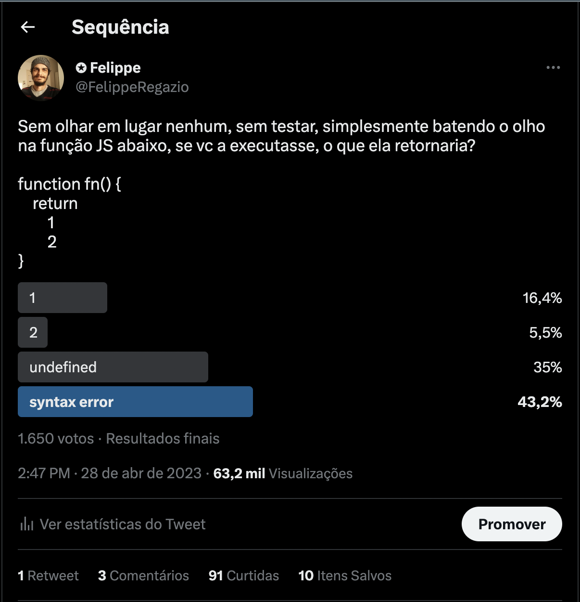
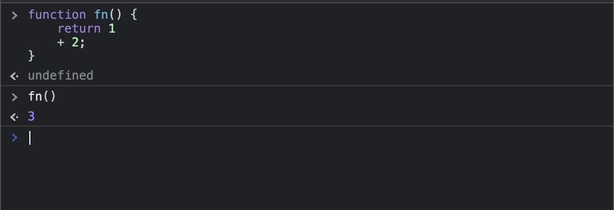
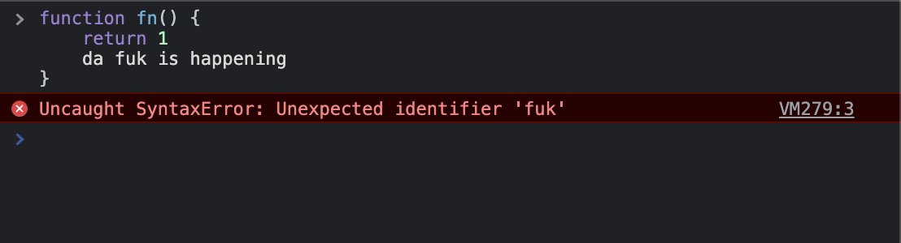
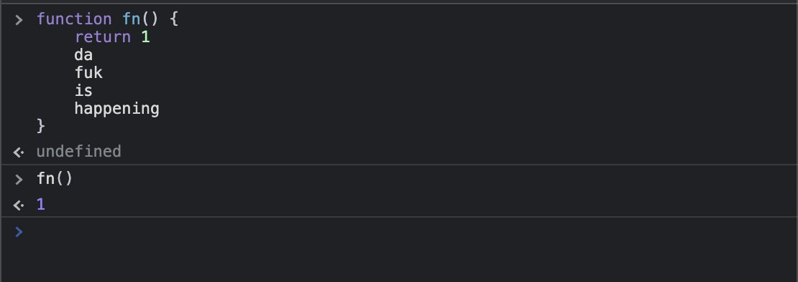
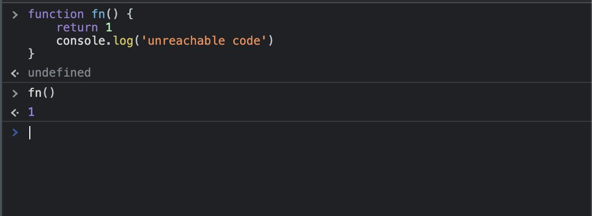
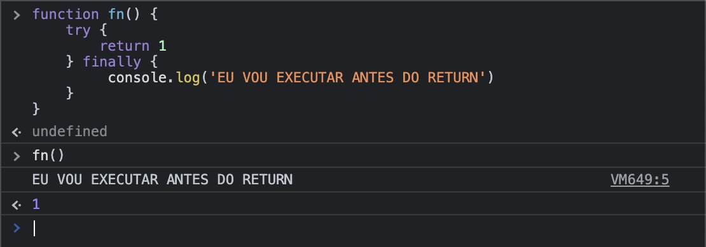

← ← ← 5/4/2023, 4:13:36 PM | Posted by: Felippe Regazio
Sem olhar em lugar nenhum, sem testar, simplesmente batendo o olho na função JS abaixo, se vc a executasse, o que ela retornaria?
function fn() {
return
1
2
}
Bom, fiz essa pergunta e 65% dos votantes responderam incorretamente. A resposta correta é "undefined". Nessa thread eu vou explicar em detalhes o que tá acontecendo aí e mostrar umas doideiras do JS interpreter.
A ideia dessa poll não foi mostrar gambiarra em JS, mas abrir precedente para explicação de conceitos avançados. Vamos tratar aqui de 3 questões simples:
Bom, o primeiro ponto é: JS por padrão necessita de ; porém elas são colocadas automaticamente pela ASI - Automatic Semicolon Insertion - então podemos simplesmente omiti-las. Porém, para a ASI, o código que vc viu seria interpretado assim:
function fn() {
return ;
1;
2;
}
Se vc notar então, temos um return vazio, seguido de valores arbitrários. Esses valores são lexicalmente validos, então o interpretador caga pra eles.
Mas não é só isso. Aqui temos o seguindo ponto: END OF FUNCTION.
Basicamente em JS um return significa o fim daquele bloco. O que vem depois será solenemente ignorado, a não ser que o interpretador julgue que há alguma possibilidade de que os valores após o return sejam parte da expressão retornada.
Veja o código abaixo:
Aqui o interpretador lê a função, encontra o + e infere que há uma expressão retornada e que tudo isso é parte do que está sendo retornado, portando a linha após o return não é ignorada. Há diversas regras e heurísticas pra determinar isso
Porém, NA MENOR possibilidade de ser uma expressão, o interpreter irá adicionar as linhas ao resultado, mesmo que elas resultem em erro, veja
Porém se o interpreter ler a função e não identificar resquícios de que os valores após o return não fazem parte do que está sendo retornado, tudo será solenemente ignorado até mesmo do ponto de vista de error thrown
E quando falamos que o que vem após o return será solenemente ignorado é pq será MESMO. Veja o exemplo:
A isso damos o nome de UNREACHABLE CODE. Ou CÓDIGO INALCANÇÁVEL.
Diferentes linguagens lidam de formas diferentes com UNREACHABLES, e há diferentes tipos disso, mas a essencia é uma só: Um código que por determinadas razões existe porém nunca será executado.
BONUS: Em JS existem algumas tecnicas para rodar coisas após returns, e essas tecnicas estão relacionadas a hacking e código malicioso. Basicamente fundamentam-se no usso de try/finally e asyncs. A ideia é burlar sistemas de segurança e ofuscar códigos. Veja o exemplo abaixo:
Não vou me estender aqui pra não contribuir negativamente para o ecossistema web. Não entrarei em detalhes nem em contextos dessas tecnicas. Porem, veja a doideira:
E como um extra, aqui Um post meu a respeito da ASI.